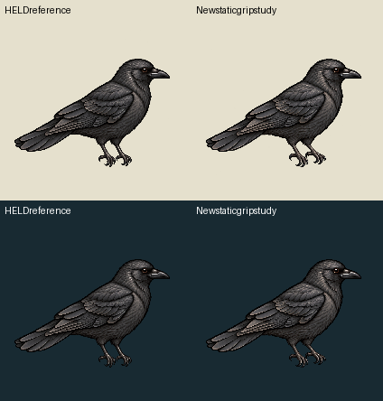
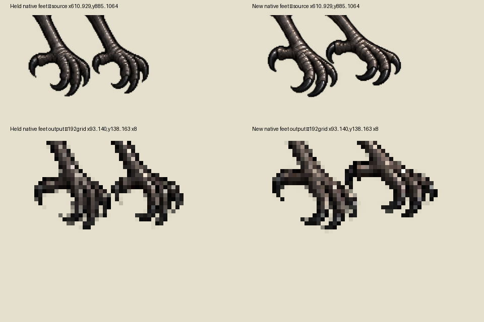
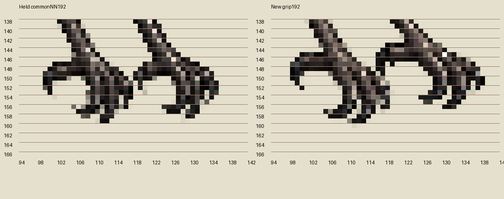

Exact held perched Crow was the sole image input. One returned native edit, zero retries. Ground-rest art is unchanged and is not an alternate perch fallback. The feet have redrawn hook/digit regions; their actual hallux opposition and articulation remain for independent review. This is one still source pose, not perching animation, landing, pressure support or a current branch-fit result.
| Existing HELD perch source | New static grip candidate | |
|---|---|---|
| Light | ||
| Dark |
Actual yardcanvas185.885350world at density157/152,192source pixels. Same fullnative1254→192 center-nearest transform; no fit/crop/translation/warp/toe painting. Root111,150 is an image origin only. Partial source alpha remains intact. No opaque branch is baked, no toe pixels are removed to fake a branch mask, and no physical contact is declared.
Current Mac support geometry is unavailable. The retained cached public c4ae audit has a9-high bar rectangle, not a calibrated cylinder or toe/branch depth mask. Region masks are labeled visible-art hypotheses with overlap and uncertainty, not front/back physical occlusion. No branch is composited here.
Exact one-frame3second APNG · RGBA192 source derivative · Visible-region hypotheses and explicit unknown depth · Cached public support audit, not current Mac

Actual native feet and enlarged direct192samples:

